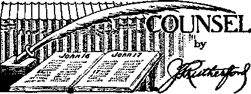
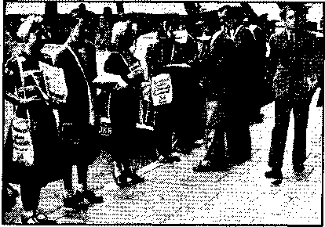
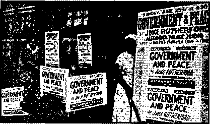
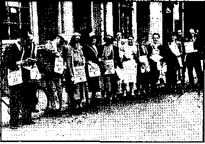

Contents
Testimony Against Them (Part 3) Fifth Column
All Is Well (?)
Chiniquy’s Record of What Lincoln Said Death and Destruction
Unprecedented Storms Mark 1940 Preliminary to Armageddon Boston’s Blood at Boiling Point New York State Goes Religious Frank Hague Laughing at Bricker The Grammostola Spider Counsel by/J. F. Rutherford
Martyrs for Theocracy
Said the Wise Old Editor
Boulder Dam and Grand Coulee Dam
The New Government
From Magallanes, Farthest South Proclamation in Sumatra Blessings in Hawaii God and the Gestapo
British Comment
The Clergy and the War
"Ye Are My Witnesses”
Weighty Problems — Baffling
Protestantism
Fascism Coming to America 'Wanted—a Lunacy Commission
S 3 7
8 9
10 10 11 12 13 14 15
16
20, 20
21
24
25
26
27
28
29
30
Published, every other 'Wednesday by WATCHTOWER BIBLE AND TRACT SOCIETY, INC.
117 Adams St.. Brooklyn, N. Y-. U. B. A.
Editor Clayton J. Woodworth
Business Manager Nathan H. Knorr
Five Cents a Copy
’ tl a year In the United States J1.S5 to Canada and all other countries
NOTICE TO SUBSCRIBERS
Remittances: For your own safety, remit by postal or exprese money order. When opin or currency is lost in the ordinary malls, there Ie no redress. Remittances from countries other than those named below may he made to the Brooklyn office, but only-by International postal money order.
Receipt of a new or renewal subscription will he acknowledged only when requested. Notice of Expiration is eent with the journal one month before sub script I on expires. Please renew promptly to avoid loss of copies. Send change of address direct to us rather than to the post office. Your request should reach us at least two weeks before the date of Issue with which it is to take effect. Send your old as well as the new address. Copies Will not be forwarded by the post office to your new address ifnless extra postage is provided by you.
Published also in Afrikaans, Bohemian, Danish, Dutch, Finnish. French, German, Greek, Hungarian, Japanese, Norwegian, Polish, Portuguese, Spanish, Swedish, Ukrainian: also special Australian edition in English.
OFFICES FOR OTHER COUNTRIES
England j 34 Craven Terrace, London, W. 2
Canada " 40 Irwin Avenue, Toronto 5, Ontario
Australia 7 Beresford Road, Strathfield, N.S.W. South Africa 623 Boston House, Cape Town
Entered as second-class matter at Brooklyn, N. Y.. under the Act of March 3, 1873.
J w Banned in Australia
♦ ,Iu its issue of January 17 the New York Times carried the following significant item tucked away in an obscure corner:
Sydney, Australia, Jan, 16—The Cabinet has decided to declare Jehovah’s witnesses an unlawful organization. When prosecuted in court the members of the sect declined to acknowledge allegiance to any earthly government, declared God their only king and themselves neutrals in the war. If Australia were invaded, they said, they would fight only to defend their own kin. New Zealand banned the sect last November.
The dispatch fails to reveal that it is the Itoman Catholic Hierarchy that accomplished the banning-of Jehovah’s witnesses, using the war as an excuse^
Dever Had Lots of Religion
♦ George M. Dever, former branch manager of the Underwriters Trust Company, had a $17,000 home at Hastings--oh-Hudson, N.Y., and a $40,000 summer .home in East Moriches, on Long Island, with cars at both places/and lots of religion. When he was arrested for stealing $200,000 the clergymen who testified to his religious life could hardly conceal their surprise when he pleaded guilty and took a three-year ride up the river. It is very difficult to have religion and honesty. The two are opposites and Dever could not harmonize them; so he got caught.
Brokers Find Hard Going
♦ In some respects the American public is learning, just a little. An encouraging gleam of light comes from the fact that Wall Street brokerage houses are folding it real work now to get'customers. It was great fun, a decade ago, not only to shear the sheep, but totremove their hide, horns, tails, feet and ears.-Now the brokers seem to feel they may have overdone it and arc wondering why the sheep don’t come back as of yare. But the war boom renews their hopes.
“And in His name shall the nations hope.”—Matthew 12:21, A.R.*V.
Volume XXII
Brooklyn, N. Y., Wednesday, February 5, 1941
Number £58
Testimony Against Them (in Three parts—Part 3)
Who were wise in the days of .Noah, those who hearkened to Grod and entered the ark promptly when they were called or those who postponed their decisions?
TN THE year 1926 Jehovah disclosed J- the fact that Satan’s organization consists of three visible elements, namely, commerce, politics and religion, under the invisible direction of the Devil and a host of wicked spirit creatures. (See Deliverance, Chapter XII, "The Final Battle.”) In 1929 the book Prophecy was published, which identified these three elements as symbolized by Egypt (militaristic commerce), Assyria (politics), and Babylon (religion). The three volumes of Vindication further explained and expounded in greater detail this triumvirate that does the bidding of their father, the Devil. Jehovah thus increased the light upon His Word for the benefit of the righteous. “Light is sown for the righteous.”—Psalm 97:11.
In the Ezekiel picture of the unholy alliance, “Christendom” is represented as a harlot who has illicit relations with Egypt and Assyria, the commercial and political elements. (Vindication, Book One, pages 187 on) This prophecy further discloses that-these two elements “shall hate the whore, and shall make her desolate and naked, and shall eat her flesh, and burn her with fire”.—Revelation 17:16. ■
Corroboration of the rift which shall turn commerce and politics against religion, whose strongest element is the Roman Catholic Hierarchy, is the ambush FEBRUARY S, 1941 set against Mount Seir by her erstwhile . allies, Moab and Ammon. (2 Chronicles 20: 22, 23) The certainty that this foretells a fight between the world’s foremost religionists and her former "lovers”, the commercial and political powers, is made clear in The Watchtower of July 1,1938, for several issues forward.
But the rift is yet ahead. It will not come until after the sign, that is, until after the three conspirators have the world to themselves and the religious bunch cries, “Peace and safety,” or, according to another translation, “All is well, and all is safe.” (Moffatt) That will ^constitute “the sign” (1 Thessalonians 5th chapter); thereafter quickly comes the end of the Hierarchy. (See Cow~ ' spiracy Against Democracy.) Note that until the final parting of the ways between the Hierarchy and her paramours, there exists (and still exists right now) the closest eb-operation between the three elements. If that is true, which constitutes the Fifth Column?
Fifth Column
It is certain from the Scriptures and from the facts that not one of these elements is traitor to the others, but all work in the closest co-operation. This will continue until the Lord puts it into the hearts of the radical elements to tear up the religionists. (Revelation 17:17; 2 Chronicles 20 :'22; 1 Thessalonians 5:3; Ezekiel 16: 37-42; “Times and Seasons,” in the Watchtower magazine, August 1, 15, September 1, 1940) It is therefore evident that at this day the three ruling elements are politics, religion, and commerce. These are combined against Jehovah’s Theocracy and are bent on making the people serfs and slaves. The Fifth Column is merely an instrument to keep the people befuddled and vainly searching for an imaginary enemy while the international gangsters continue to gut the earth. It is used as a smoke-screen to' keep the people running about in hysterical circles, while the gang complete the destruction of all freedom under cover of the general furor. In the melee one organization can take a crack at almost any group that has been previously marked for a sock and give as the excuse, “They are Fifth Columnists!”
The scheme is-similar to the old army game of sticking an invitation “Please kick me” on the back of a rookie; and then the old-timers accommodate, with fun to all except the rookie. The difference is that the hue and cry after Fifth Columnists is done by a band of serious criminals who expect to “get” a good many enemies of themselves, and at onee divert suspicion upon some innocent group. A phony uniform of patriotism seems to convince the average man that the hunt is genuine. In the end so many charges and counter charges are made that the villians are lost in a sea of suspects. .
In this present state of confusion it is necessary to bear in mind that the Scriptures foretell three ruling elements that are not displaced until they throw subterfuge to the winds and really go after each other. It is important to remember this in noting that the commercial element is hand in glove with the Fascist religionists.
It is easy to see that all sueh-governing-gjoups will profit by the destruction of the democracies. Control of the; people is virtually simple under the autocracies
4 ' " ................. or the totalitarian systems. The political part is then no longer worried Ijy a parliamentary body elected by free voters; the religious element no longer must be “shocked” by the exposure of their racket ; while the munition makers and other manufacturing and business houses need not make concessions to trade unions nor have their profits clipped by the necessity to pay adequate wages. All is clear sailing, while the people are the galley slaves, the serfs, the chattel. It was foretold that modern Tyre or commerce would keep step with the partners, and’ the proof is abundant that big business has done that very thing.
Moab
Some months ago it was pointed out by The Nation that Hitler’s air fleet was built up by such great airplane manufacturers in this country as Douglas and Pratt & Whitney. There was more than a hint in the article that American naval secrets were utilized in the design of the deadly German dive bomber. Newspapers have intimated a definite leaning to Fascism among Wall Street financiers. An official in the Texas Oil Company was so outspoken in his friendship for Hitler that his resignation was demanded. The Friday magazine charges, with much documentary evidence to support, that a large group of well-known corporations have contributed to Fascist anti-Semitic promoters in this country. The reason for such donations is given as: “Union busting and anti-Semitism go hand in hand. Anti-Semitism—the stirring up of hatred against the Jewish people—is the advance guard of Fascism. The Fascist.agents try to split the ranks of the unions, to pit one group of workingmen against another, to deflect labor’s struggle away from real problems and foes against imaginary ‘Jewish plots’.” (October 11, 1940, issue)
. The open scandal of such methods employed by the Ford : Motor Company is further revealed in a special issue of the Protestojnt Digest under the title “Model
~ CONSOLATION
T Anti-Semitism”. According to this article Ford authorized the use of the forged Protocols of Zion by his paper, the Dearborn Independent. According to other sources W. J. Cameron, heard on the Ford Music Hour, still conducts an anti-Semitic sheet and had on the company pay roll the infamous Fritz Kuhn, Bund Fuehrer, who is now at Sing Sing.
Another employer of such criminals is the United States of America. Among the reasons for the misfiring of the Dies Committee investigations of anti-Americanism was Chief Investigator, Edward F. Sullivan. Friday magazine furnishes documentary evidence that Sullivan served a sentence for larceny in Massachusetts and was charged with a more heinous crime in New York, all prior to his appointment by the government. He was and still is a Fascist, who (in 1934) addressed a group of 2,500 Bundists and shouted: “Throw the lousy Jews into the Atlantic ocean. Heil Hitler!” [Friday magazine, October 11,1940) A review of the activities of the agents of Catholic-Nazism is a parade of the lowest scum of humanity, criminals whose vice is unspeakable, and whose paths lead through ’ the slimy dives of the underworld. Coughlin used gangsters of this type to try to break up a lawful assembly of Christians at Madison Square Garden in June, 1939. Seventeen of the members of his “Christian Front” were later arrested for possession of dynamite and arms. Catholic pressure squelched the case, but it was brought out that the gangincluded a man charged with rape and two with robbery. However, all were freed and Coughlin was not even questioned.
The three allies are not at all hampered by national boundaries, Their unify bridges across/continents and oceans. While Britain fights a life-and-death struggle with her back to the wall, “British Big Business Has. Sabotaged Nation’s Defense,” to quote thb September 6 issue of--Friday. -Again documentary proof is adduced showing how the finait ciers held defense-weapon production FEBRUARY 5, 1Ml low and profits high and revealed the scandalous connections between British and German munition manufacturers. Also the “Men of Munich” were exposed in a publication “Guilty Men”, which was banned by large distributors, but 50,000 copies were sold. The people, represented in the House of Commons, have demanded and obtained removal of some of Chamberlain’s partners in the appeasement betrayal. Two notoriously pro-Nazi peers recently got a setback when they rose to attack Communism (the Catholic bogeyman) from Lord Strabolgi:
‘The surrender of France,’ said Lord Strabolgi, ‘was not made by the Communists. It was made by Marshal Petain, who is a Catholic Royalist; General Weygand, who is a Catholic Royalist; M. Laval, who is certainly not a Communist. There was M. Marquet, mayor of Bordeaux, a renegade Socialist but not a Communist; and M. Bauduoin, an international financier, a great friend of the Italian bankers, with banking and financial interests in the Italian colonies.’ ” Strabolgi is leader of a group who seek to “sack the Old Gang” and all who “would destroy democracy to protect dividends”. These quotations are taken from Friday magazine, September 6, 1940. To those who desire to acquaint themselves with England’s problems in her fight for life, this article, “Has Britain' Been Betrayed?” is highly recommended.
It is clearly seen that there is no mysterious Fifth Column, no new menace that has never existed before. It is but an expression and a subtle instrument of the same old gang. The three parts of Satan’s organization constantly operate at the expense of and to the destruction' of the people. As religion is the chief means used to deceive, it is the element that would most nearly fit the modern meaning of the word, that is, a treacherous enemy who betrays from within. Different uniforms are w’orn, sometimes ■ the. priest’s garb,-at other times the minuteman regalia, but the operators re-
main unchanged. At Vatican City, the Hierarchy’s chief representative directs the forward move of Nazi-Catholic Action to the end that all may presently bow to the Papacy while groveling under a Nazi yoke.
Long ago the'Scriptures foretold that these conditions would exist at the end of the world, that is, just prior to the time when Satan’s empire would be cut off in destruction. "Christendom,” whose leader is the Roman Catholic Hierarchy, was depicted as a harlot. She is described as building her houses [churches] ‘in the head of every way, and making her high place in every street’, and committing fornication with her lovers, Egypt and Assyria, the commercial and political elements. How typical of the pope and his prelates are the words that she shed the "blood of thy children,. which thou didst give unto them” I How the pope has turned over his Catholic ‘children’, for whom he pretends to grieve, to his allies for gun fodder! The picture discloses that the Hierarchy goes out of her way to seek relation with the worldly powers and pays them for such relationship. Today the Vatican is undoubtedly assisting in the finance of Hitler’s campaign. "And the contrary is in thee from other women in thy whoredoms, whereas none follow-eth thee to commit whoredoms: and in that thou givest a reward, and no reward is given unto thee; therefore thou art contrary.” (Ezekiel 16: 34) “They give gifts to all whores; but thou givest thy gifts to all thy lovers, and hirest them, that they may come unto thee on every side for thy whoredom.”—Ezekiel 16: 33.
Witness
‘ This is indeed aderrible picture. Many other scriptures disclose that the “Harlot” is to be cut off in the height of her power. She is stripped, exposed, and torn to pieces by the very group with whom she has been so intimate, the political and commercial elements. This is accomplished by the power of the Lord, for He has so purposed it. (Isaiah 46:11; Reve-
' 6
lation 17:17) Will the exposure work of Jehovah’s witnesses bring about the downfall of the Hierarchy? Certainly not. Mere words would never seriously hinder that bloody monster. The Lord will do the work of execution through His- King, Christ Jesus, “Thine hand shall find out all thine enemies: thy right hand [Christ Jesus] shall find out those that hate thee. Thou shalt make them as a fiery oven in the time of thine anger; the Lord shall swallow them up in his wrath, and the fire shall devour* them.” (Psalms 21: 8, 9; 145': 20) All who would escape this wrath must of necessity terminate ail relationship with any part of Satan’s organization.—Zephaniah 2:1-3. ,
Meanwhile the Hierarchy and her allies go merrily on making the earth a . miserable place for decent people to abide in. The great press systems are whooping up her praises. Her black-frocked agents incite mobs on the lawabiding; school children are viciously persecuted under the false banner of patriotism ; the earth is drenched in blood at her instance: but these triumphs mark the approach of her doom. The righteous are not afraid, for the Lord says to them: “I, even I, am he that comforteth you: who art thou, that thou shouldest be afraid of a man that shall die, and of the son of man which shall be made as grass.”—Isaiah 51:12; Psalm 145: 20.
What, then, is the purpose of uncovering the dirt of the Hierarchy and her filthy paramoursThe answer is: “For a testimony against them.” (Mark 13: 9) Why dig into the muck of her crimes to bring to light the most unspeakable record of all times ! “For a testimony against them!” Why disclose her murderous complicity with international financiers and dictators ? Why expose her willingness to have all or any as bedmates to push forward to world control? Her judgment is not of men. She stands condemned before the Royal Court of Heaven and the sentence is death. The Lord exposes her as a testimony against her and for the benefit of those who would
CONSOLATION
escape the doom of religion 1 “For there is nothing hid, which shall not be manifested.” (Mark 4: 22) “And the hail shall sweep away the refuge of lies, and the waters shall overflow the hiding place. And your covenant with death shall be disannulled, and your agreement with hell shall not stand; when the overflowing scourge shall pass through, then ye shall be trodden down by it.”—-Isaiah 28:17,18.
How could there be any room on a righteous earth for a blood-thirsty monster whose agents have castrated, tortured and killed the Lord's servants, and who has made Europe a slaughterhouse for those she claims are her children? “Even in thy skirts is there found the blood of the lives of the helpless innocents . , . Behold me! entering into judgment with thee.” (Jeremiah 2:34, 35, Rotherham) The Lord for ever hates “a proud look, a lying tongue, and hands that shed innocent blood”, (Proverbs 6:17) In the day not far distant when God’s righteous Bui er, Christ Jesus, has executed the wicked there will be no more “prayers for petice” nor highly advertised crocodile tears shed in “grief” over a war that was incited by the ^weeper at Borne”. When the government is established “with judgment arid with justice, from henceforth even for ever,’’ the earth will be relieved of the presence of the Hierarchy. (Isaiah 9: 7) The Theocracy, in which there will be nothing to “hurt nor destroy”, shall put an end to all wickedness.—Isaiah 11:9; Psalm 9: 12,17.
This, then, is the purpose of everything Jehovah’s witnesses do : To testify to the name of the Most High, against the wicked and for the benefit of the righteotis of every “race, kindred and tongue”, If some find this a message of hate, then it is not the fault of the messenger. Tbeir complaint is against Jehovah and they shall not be spared by the Lord’s Avenger. “And shall not God avenge his own elect, which cry day and night unto him, though he hear long with FEBRUARY B, 1941 them? I tell you that he will avenge them speedily.”—Luke 18: 7, 8.
Take heed, then, righteous people of earth 1 Do not give ear to man’s message, but to the Lord’s message of warning. The peal of doom has been sounded for all His enemies. They are marching to certain de^th 1 They have killed His sheep and blasphemed His name! They' are tramping through blood to further blitzkriegs! Crime and evil are hailed as virtues. Furiously they ride tri meet the Invincible Field Marshal! They shall not ride back.
“Gather yourselves together, yea, gather together, O nation not desired [by the Hierarchy]; before the decree bring forth, before the day pass as the chaff, before the fierce anger of the Lord come upon you, before the day of the Lord’s anger come upon you. Seek ye the Lord, all ye meek of the earth, which have wrought his judgment; seek righteousness, seek meekness; it may be ye shall be hid in the day of the JjORd’s anger.” (Zephaniah 2:1-3) Herejfis the Lord’s direction. It is an invitation to life. To seek the Lord one must learn of His provision for life through Christ Jesus. Then follow the prescribed course, bearing in mind that the testimony against the Hierarchy is final and her ways are the ways of death. This do, and may God keep you aright.—Elton Groves,
All Is Well (?) •
♦ AU is well with the beloved land. A survey just completed by a government agency brings forth the radiant fa<*t that three American families have fortunes that total eleven billion dollars, and, being in control of some of the most important productive enterprises in the country, are steadily and thriftily augmenting that tidy sum. One of these corporations, owned by the Du Ponts, did in the World War a neat little business of $1,245,000,000 in war material and paid dividends totaling 458 percent.— Charles Edward Russell, in The New Leader.
AT THIS time of great to-do about Lincoln’s birthday, take just a moment to consider the following passage from Fifty Years in the Church of Home, and take special note of what Lincoln ♦ said about Professor S. F. 8. Morse, inventor of telegraphy. The proof of what Professor Morse said to Lincoln, and what Lincoln reiterated to Mr. Chiniquy (fifty years a Catholic priest), will appear as the leading article in Consolation No. 561, issue of March 19, under the title “Confessions of a French Catholic Priest”. The Jesuits have not yet destroyed all the records of the sayings and doings of Lincoln, Morse, Chiniquy and other American patriots who saw coining what is now self-evident to the eye of all intelligent persons,—the complete domination of American political, educational, journalistic and theatrical life, including American thinking, by the worst gang of racketeers that ever infested the planet. The Roman Catholic Hierarchy would like mighty well to question the truthfulness of these burning words, but Chiniqny’s honesty is substantiated by Prof. Morse’s honesty, too. The statement:
There is a fact which is too much ignored by the American people, and with which I am acquainted only since 1 became president; it is that the best, the leading families of the South, have received their education in great part, if not in whole, from the Jesuits and the nuns. Hence those degrading principles of slavery, pride, cruelty, which are as a second nature among so many of those people. Hence that strange want of fair play, humanity; that implacable hatred against the ideas of equality and liberty, as we find them in the Gospel of Christ. You do not ignore that the first settlers of Louisiana, Florida, New Mexico, Texas, South California .and Missouri were Roman Catholies, and that their first teachers were Jesuits, It is true that those states have been conquered or bought by us since. But Rome had put the deadly 8
virus of her anti-social and anti-Christian maxims into the veins of the people before they became American citizens. Unfortunately the Jesuits and the nuns have in great part remained the teachers of those people since. They have continued, in a silent, but most efficacious way, to spread their hatred against our institutions, our laws, our schools, our rights and our liberties, in such a. way that this terrible conflict became unavoidable, between the North and the South. As I told you before,' it is to Popery that we owe this terrible civil war.
I would have laughed at the man who would have told me that before I became president. But Professor Morse has opened my eyes on that subject. And, now, I see that mystery; I understand that engineering of hell which, though not seen, nor oven suspected by the country, is putting in motion the large, heavy and noisy wheels of the state cars of the Southern Confederacy.
Our people is not yet ready to learn and believe those things, and perhaps it is not the proper time to initiate them to those dark mysteries of hell; it would throw oil on a fire which is already sufficiently destructive. . . .
But sooner or later, the nation will know the real origin of those rivers of blood and tears, which are spreading desolation and death everywhere. And, then, those who have caused those desolations and disasters will be called to give an account of them.
I do not pretend to be a prophet. But though not a prophet, I see a very dark cloud on our horizon. And that dark cloud is coming from Rome. It is filled with tears of blood. It will rise and increase, till its flanks will be torn by a flash of lightning, followed by a fearful peal of thunder. Then a cyclone such as the world has never seen will .pass over this country, spreading ruin and desolation from north to south. After it is over, there will be long days of peace and prosperity; for Popery, with its Jesuits and merciless Inquisition, will have been for ever swept away from our country. -—Pages 714, 715,.Fifty Years in the Church of'Roma, by Ci Chiniquy.......
CONSOLATION
Death and Destruction
♦ Originally the war of the nations, sudden as a bursting bomb, opened its bloodshed account in Servia, now Yugoslavia. Historically, the story has been told in fact and fiction a hundred times. Invisibly, the demons were there; nor have they, it appears, ever left their active and malign association with things and persons connected in various degrees ■with the primary cause of this age conflagration. Be that as it may, the following curious chain of circumstances cannot but give rise to somber thought on the hideous power controlling the peoples of earth. Today an abandoned motorcar lies in the knacker’s yard of a deceased Belgrade dealer in secondhand parts. It is the car in which the archduke Kranz Ferdinand, heir-apparent to the Austrian throne, and his wife were shot dead by the assassin Princep as they drove through the streets of Sarajevo. Ever since then this car—made, strangely enough, in Germany-—has brought nothing but death and disaster to its owners. For several months after the assassination it lay in a garage. Then the governor of Sarajevo, General Po-tiorek, who was riding in the car when the archduke and his wife were killed, and who narrowly escaped death then, had it repaired for his own use. Its cushions were re-covered, and the holes where the pistol shots had pierced the coachwork were sealed. A few days later the governor went into battle for his country, and was defeated. The shame drove him mad, and he died penniless in a lunatic asylum.
The car passed into the hands of an Austrian officer. On two successive days it killed people on the roads, and soon afterwards its owner was killed when the car struck a pylon. Two more owners were killed while driving-the car.'After that if was laid up again. '
After the armistice, when Bosnia be-
FEBRUARY S, 1941 " :' came Yugoslav territory, the new governor of Sarajevo acquired the car, which had been given a new coat of paint. After being involved in four accidents, in one of which he lost an arm, he sold it to a doctor.
Six months later the doctor was called to an urgent case in the country. He never got there. The car -was found overturned with the doctor’s body lying about fifty feet aw'ay. The doctor’s patient died.
The ear was towed to a garage, and sold to a ■wealthy land owner, after being repaired. Within six months he became bankrupt and committed suicide. His executors sold the car to a businessman. A week later, in a collision, he killed two people and injured four passengers he ■was carrying.
Again the car passed into the hands of a doctor. When he wTas warned, he sold it to a Swiss racing motorist, Bluntli. One day Bluntli, ■with his family, left in the car for a holiday in the Dolomites. The ear struck another as it was mounting a precipitous mountain road, and hurled it into a ravine hundreds of feet below. Bluntli was killed.
Five more times it changed hands, and each of its new owners or their friends, after riding in the car, met sudden death.
The heirs of the latest owner would have nothing to do with it, except to ask a secondhand car dealer to come and drive it away. They would take no money for it. The car was driven by the dealer himself to his yard. He died suddenly the same night. The death of Jehovah God’s creatures is the sole, malevolent purpose of the demons controlled by the Devil. —Australian Consolation.
Henry’s 28,000,000th '
♦ Henry says that when; he started to make. Fords he had $28,00(1.capital. In 1940 his concern made the 28,000,000th car. The first car was marketed June 16,
....... ..... ’ / 9 '
Unprecedented Storms Mark 1940
♦ Unprecedented storms marked the beginning of 1940. A great ice storm, technically known as a glaze, covered the eastern states. Millions of trees were ' damaged by the great loads of ice, sometimes two inches thick, carried on every bough. Electric lines suffered then, but much more two weeks later when a great tornado in the sun caused a magnetic storm that practically destroyed wire and wireless communication for five hours. Fortunately this storm came in the middle of the daytime on a Sunday. If it had occurred when the newspaper offices are busiest the papers the next morning would have been a strange sight, for the teletype systems upon which they depend went haywire and the dispatches that came through were unintelligible and undecipherable. 1940 was also ushered in by an epidemic of severe earthquake shocks, many of them beneath the ocean in various parts of the world, but culminating in great disasters in Turkey and elsewhere. The excessively cold weather, long continued, which ushered in 1940 ischarged to an unusual quantity of volcanic dust many miles above the earth that reduced the number of the sun’s rays? reaching the planet.
Explosion of a Sun
♦ It is conjectured that the terrific cold wave which swept the northern hemisphere in the winter of 1939-1940 may have been caused in some unexplained manner by the explosion of a huge sun in the milky way, recently observed by several astronomers.
Coldest and Hottest
♦ The coldest weather recorded by man was 94.4 degrees below zero, in Siberia, in 1892, and the hottest was 136.4 degrees, in Tripolitania, Libya, North Africa, in September, 1922. That is a difference of 230.8 degrees and it speaks 10
volumes for the way man is put together that he can stand such extremes. The temperature of the world has been gradually rising during the past forty years, owing to the melting of the polar icecaps. In the East the winter of 1940-1941 is much milder than that of 1939-1940.
Preliminary to Armageddon
♦ Preliminary to Armageddon, and as one of the features of the “evil day” wdiich precedes it, the earth is due to crack along the lines of the great earthquake fissure that runs around the globe. In 1935 it was in Quetta, India; in December, 1939, it was farther west. Turkey had a horrible experience. In places the mountains were torn with fissures several yards wide, from which smoke and sulphur poured. Other fissures shot out high jets of boiling water. Rivers were swollen by great rains. Dams gave way. Bridges disappeared. The frightened inhabitants of large areas left their homes and encamped in the snow in bitter winter weather. There were 45,000 killed and 100,000 injured, and 500,000 made homeless. All this was at the time Finland was putting up its plucky fight for existence against the Russian Bear. Hence it received not much public notice. But the Turkish earthquake was a great disaster.
The Meteors About Saturn
♦ The rings about Saturn, three in number, are thin and flat, lying one within another in the plane of the planet’s equator; hence they can sometimes be seen and sometimes not. Galileo, who first saw them, subsequently could not see them, because he looked at them edgewise. The outer ring is 171,000 miles in diameter. The rings are similar to those that once enveloped the earth, and which, falling at various times, left behind them the coal, iron, gold, fire clay and other mineral riches with which the earth’s crust abounds.
CONSOLATION
Boston's Blood at Boiling Point
♦ New England is famous in history, not for being conservative, but for being the other way. The lievolution started there, and isn’t over yet. A throng of 20,000 gathered on the famous Boston Common and clmered Colonel Henry Breckenridge, of New York, and Dr. A. Lawrence Lowell, president emeritus of Harvard University, as they demanded that America give all possible aid to the Allies, give it immediately and arm to the teeth, because “the blood-drenched Hitler is at our gates.” “If France and England go down, we shall face alone the dictators. It is inconceivable that America can exist as the only free nation in a world of conquering tyrants.” “Where the money is the hand will light.”
A “Chromium-plated” Watch
♦ Two years ago I bought an aluminum-plated watch, sold as chromium-plated. In a few days my wrist began to itch, became inflamed, became sore, and the sores began to break and run. Now, in order to wear my watch, I cover the back of it with white adhesive tape, and this device' of keeping the deadly poison away from niy wrist works to perfection.™ Gordon J. Boosha, Vermont.
Their Hitler Salute Worries Them
♦ Word comes from Boston that schoolmen there are worried now because the form of fiag salute pushed over on the public schools (by those that run the parochials) is the Hitler form. Never mind! That is what both Pacelli and Hitler desire, and their agents in Boston have done as they were expected to do. Why change it ?
Physicians Kill a Girl in Worcester
♦ As a part of the unscriptural and unreasonable scrum craze, physicians in a state hospital at Worcester, Massachusetts, killed a beautiful 21-ycar-old girl
FEBRUARY S, 1941 that they had talked into submitting ‘to one of their experiments. She died within ten minutes after receiving an injection of the stuff they had fixed up for insertion into her blood stream; and you can bet your last dollar that not one of them will suffer any punishment or receive any rebuke whatever for this crime.
The Santa Claus Swindle
♦ Persons who lie to little children about Santa Claus should be interested in the fact that in Boston a department store employee stepped on the right foot of an eight-year-old boy and broke his instep. The employee was dressed as Santa Chius and is being sued for $20,000 for making a child a cripple for life. Not a Christinas season passes that does not take its toll of precious lives due to fires caused by the trees and other decorations. And what about the homes that are burned to the ground and the suffering thus caused to children and parents?
Zakos May Learn Something
♦ In Greenwich, Connecticut, when Stephen Zakos, a white chef, refused to serve him and three companions, W. Avery Wood, a Negro attorney of Stamford, had him arrested on the grounds that he violated the State law which, under the penalty of a fine of $1,000 or imprisonment for one year, prohibits “the deprivation of an individual’s immunities on account of alienage, color, or race.”-—Equality.
Fascist-Nazi Ideals
♦ “The French and British arc lighting agaihst an enemy which openly boasts that personal liberty and international good faith, ideals to which our nation is dedicated, shall be destroyed by the brute force that knows no law.”—President Charles Seymour of Yale University, in an address in New Haven. (New York Times) _
. 11
New York State Goes Religious
♦ Despite the certain knowledge that it is the first step in union of church and state, both the senate and assembly of New York State passed, with but one dissenting vote, approval of a bill to excuse the little folks - from school during the precious hours devoted to instruction, so that they might go to some “church” or elsewhere to receive “religious training”, i.e., knowledge that will be but a snare to them and lead them farther from truth and righteousness than any other course they could take.
Biggest Flower Blooms '
♦ Bronx Park, New York city, was favored a while back with the blooming of the Giant Krubi, of Sumatra, the largest flower in the world. Within two hours from the time the flower started to unfold its blossom the latter became a full bloom four feet in diameter and five feet high. It is described as like a gigantic morning-glory, with fluted sides and ruffled edges, the interior a rich maroon and the exterior a light green. No Giant Krubi has ever bloomed a second time in captivity.
Teepell Envied the Animals
♦ At Buffalo, New York, Walter E. Teepell wrote a little note and put it in his pocket, saying, “I cannot go on; even the animals are better off; they get their meals regularly,” and then shot and killed himself on the steps of a church. The name of the church was the First United Presbyterian church. Not sure if that will increase attendance any.
Her Hunk of Glass
♦ :A poor woman walking through Union Squarej New York-city, saw an attractive-looking hunk of glass, picked it up, and next day showed it to a jeweler, He advised her to show it to the police, which she did. The stone, was then advertised,
12
but nobody claimed it, and now the poor woman has a ten-carat diamond, worth from $5,000 to $10,000, and as her family has it hard to get along, she is real glad that she stooped to pick up the “piece of glass”.
Humidity and the Death Rate
♦ A very astonishing deduction made by the night meteorologist of the New York Weather Bureau is that a low death rate is associated with high humidity and a high death rate with low humidity. In other words, New Yorkers are more healthy when humidity is high. Perhaps the explanation is, not that they are in better health when they are uncomfortable, but that they are in better health when they perspire and the poisons are getting out of their systems.
Queensborough Houses
♦ Queensborough Houses occupies 47 acres in what was once a slum area and, when completed, will furnish excellent homes for 11,400 persons. The average rent is but $5.41 per room per month, and no family may live at Queensborough at all if its total income exceeds $1,196. A newr park of 15 acres adjoins. Ultimately a total of $13,500,000 will be expended on this development, which, thus far, is the largest housing development in America. :
Plans to Move 2,000,000 Troops
♦ The railroads of the .United States and the United States Army, working together, have formulated plans for moving 2,000,000 troops through the port of New York. This fact came to light by a chance remark of the manager of port traffic in an interstate commerce commission hearing. Wonder if you are one of the 2,000,000 men and where you have in mind to go, Of course, you know that promises, like platforms, are to get in on, and not to ride on. Europe, next stop.
CONSOLATION
Frank Hague
♦ Many brief biographies of Frank Hague have appeared in this magazine in recent years. Here is another, collected from various sources. Hitler’s technique is the crudest of the crude compared with Hague’s methods of controlling both parties in New Jersey. All that is necessary is that politicians do as they are told and pay a percentage of their salaries into the “kitty’. Hague takes himself seriously. He was expelled from school at the age of 13 as incorrigible, and is still that. He bans carnivals, burlesque, night clubs, taxi dance-halls, brothels and women drinking at bars, never drinks, not even tea or coffee, talks profanely and scathingly. He is on record as saying: “As long as I am mayor of this city the great industries of the city are secure. We hear about constitutional rights, free speech and free press. Every time I hear these words I say to myself, ‘That man is a red; that man is a Communist.’ You never hear a real American talk in that manner.”
Hague lives like a multimillionaire and on a salary of $6,000 a year is able to . bestow $75,000 gifts on Roman Catholic institutions which meet his approval. When tickets in which he is interested are up it is not uncommon for dead men to vote in favor of them and live men vote so many times they get dizzy trying to keep a record of it, New Jersey is the jumping-off place of American civilization. .
America’s Biggest Cities ;
♦ New York has 7,380,259; Chicago, 3,384,556; Philadelphia, 1,935,086 ; Detroit, 1,618,549; and Los Angeles, 1,496,792. Of less than 1,000,000 inhabitants and more than 500,000 are Cleveland, Baltimore, St. Louis, Boston, Pittsburgh, Washington, San Francisco^ Milwaukee, and Buffalo. Of less than 500,000, but still among the nation’s 25 largest cities, FEBRUARY 6, 1941 .
are New Orleans, Minneapolis, Cincinnati, Newark, Kansas City, Indianapolis, Houston, Seattle, Rochester, Louisville, and Denver. Jersey City used to be among these leaders, but Hague’s policies have killed the town, and in the ten years from 1930 census to 1940 it fell from number 23 in the national list down to number 30, the biggest fall of any American city. Nobody wants to try to do business in a city run by a man with no more conscience than a man like Hague. -
Addressing Frank Hague
♦ Addressing Frank Hague, the dictator’s personal ambassador to New Jersey, Mr. Willkie thunked this American Hitler for letting him speak in Jersey City and said, “But I should like to point out that Americans don’t need to be told to listen courteously to somebody addressing them publicly—they were all born with the right to listen. What kind of civil liberty is there if a certain big shot in some community must request the people of that community to give a hearing to somebody who wants to speak to them? How did he get that way?”
Cured Hint of $2,000 ‘
♦ A woman in the city of Frank “Cardinal” Hague persuaded a tavern keeper to advance $2,000, with the understanding that it would be returned to him after a midnight ritual of “faith healing” in a local cemetery. If you see the woman, be sure to let the anxious man know, because: he is still waiting for her.
House Moved Fourteen Miles
♦ A resident of Avalon, New Jersey, decided she would like to live in Cape May Court House, fourteen miles away, so she moved, and took her house with her. The house was loaded on a barge, and made the trip in safety, for $1,400. The house was a fair-sized six-room house.-
Laughing at Bricker
♦ Ohio citizens are laughing at “Reverend” Bricker now because he promised he would clean house in the state government if made governor of Ohio. The principal thing he accomplished in this direction was to boost Ohio liquor sales 47 percent. Bricker’s reason for hating Jehovah’s witnesses lies in the fact that during the first World War he gave up the study of the law and studied for the ministry. This looked likd a safe bet for keeping out of danger. When the war was over he went back to the study of the law. It would be impossible for any hypocrite not to hate Jehovah’s witnesses. So, maybe Bricker did the “reasonable” thing (for him), after all, in rejecting the petition of over 2,000,000 of his fellow men that he give the witnesses a fair deal and stand by American laws and principles.
A Church Dog
♦ A subscriber writes in making inquiry about an Associated Press dispatch from Frankfort, Kentucky, A priest had claimed exemption from a license tax for his dog on the ground that the dog is the property of the church. The lady 'wants to know what kind of dog a church dog is. It is slightly embarrassing. But, lady, a church dog is the son of its mother, and that makes it a son of whatever kind of mother it chances to be. If this isn’t clear, the matter can be taken up with any dealer in dog collars or church goods of any kind.
Not So Important, After All
♦ The board of public health of Indianapolis issued an order that all school children must be vaccinated or remain away from classes. Six hundred of the .youngsters concluded to stay away; and then the board decided vaccination is not so important, after all, and rescinded the order. 1
In Kosciusko County, Indiana
♦ In Kosciusko county, Indiana, the county board of education appealed to the state department of'the American Legion to investigate the principles of the Methodist bishop G. Bromley Oxnam, of Boston, Massachusetts. That’s rich. Now, just to give them something to do, how would it do for the board to appeal to the Legion for the right, just for a time, to lay aside their didies and wear pants? The experiment would probably end in disaster, but they might try it, anyway. Being an American does not consist in flag-waving, and threatening, and maltreating other Americans.
In Rural Ohio
♦ In rural Ohio, in an elegant new home, surrounded by several tourist cottages, lives a gentleman who wishes not to be disturbed, and his wishes are being respected. On the gate which leads into his private park or tourist camp is emblazoned the following hearty invitation to remain outside:
“Nous. Tresspasers will b persecuted to the full extent of 2 mungrel dogs which never was over sochible to strangers and t 1 dubble brl shotgun which aint loaded with sofa pillers. Dam if I aint gitten tired of this hell raisin on my place. Jorge T. Glover.”
Wild Scene at Rochester, Indiana
♦ There was a wild night scene at Rochester, Indiana, when Cole Brothers circus was burned and buildings 240 feet by 320 feet burned so quickly that lions, tigers, panthers and leopards were burned to death in their cages. About 350 horses, elephants, camels and ponies stampeded into the city. Several of the elephants tried to turn back to the blazing buildings, but were prodded away by employees. One of the owners of the circus suffered a heart attack and had to be taken home.
14
consolation
The Grammostola Spider
♦ The grammostola spider of Brazil is no ordinary spider. He has a peculiar appetite. He is fond of jararaeas, that is to say, laehesi atrox. In other words, he eats snakes. When he selects a snake that he thinks he would like he shoots Mr. Snake full of venorn. The snake gets cramps, like a small boy that has eaten too many green apples; then he gets lockjaw, convulsions, paralysis and loss of breath, and finally passes to his reward, which, in this case, is inside the spider. It takes several days for a grammostola to eat a jhraraca, but he has a good time, or thinks he has, while he is doing it. Never start an argument with a grammostola.
Lots of Room in Brazil
♦ Jose Oliveira Marques, head of the land colonization department of the Agriculture Ministry of Brazil, in a statement made at Rio de Janeiro, the capital, made the following declaration: “Farmers from the United States will be thrice welcome. They will be received as friends and we will give them special treatment, Brazil knows United States farmers are specialists who are likely to introduce modern farming methods, helping improve the living standard of Brazilian farmers. They would come to Brazil freely, not because of politics”.
Lost for 25 Years
♦ Peruvian aviators discovered a town of 80 white families in southeastern Peru which had been out of contact with civilization for twenty-five years. These pioneers, composed of Spanish-speaking people, welcomed the sight of newspapers and begged that the Peruvian authorities would send them schoolteachers and a radio telegraph station. Viewing the present condition of the world, it seems almost as if their request ought to be denied.
FEBRUARY 5, 1041
The Snow Cruiser
♦ Admiral Byrd’s “Snow Cruiser” is 55 feet long, 15 feet wide, 15 feet high, and has wheels 10 feet in diameter. It has separate proprflsion for each ■wheel, can cross a crevass 15 feet wide, and carries an airplane on its back. It provides living room for six men, with food and supplies for a year and a half. It cost $150,000. The biggest thing on wheels, it wallows badly when the snows in Antarctica are soft, not having enough power to handle itself properly. However, the idea seems practical and sensible.
“Treasures upon Earth”
♦ Perhaps never having noticed the Lord’s instructions,' “Lay not up for yourselves treasures upon earth,” somebody in charge of the cathedral at Lima, Peru, laid up about $60,000,000 worth of gold plate and jewels as part of the ■ equipment of that enterprise. Along came the pirate ship Mary Dear, made love to the $60,000,000 worth of earthly treasure, and buried it on Cocos Island. It has just been found. Who wants it? Do you? After Armageddon it will not be worth 30c.
Treasures of Antarctica
♦ The treasures of Antarctica up to date are seemingly limited to penguins, mosses, lichens, and ice two thousand feet thick. There are no insects, no fourfooted beasts, no natives. Winds average fifty miles per hour the year round,' and the temperatures run to eighty degrees below zero. There may be minerals. —Australian Consolation. .
Refugfees Returned to Devil’s Island
♦ It makes an American ashamed to read that after eight brave men sailed a boat 3,500 miles to escape from the horrors of Devil’s Island to the United States, they are liable to be sent back to perhaps the world’s worst prison camp.
15
ONLY a few persons now on the earth appreciate the importance of the present-day events that are coming to pass, because only they have a vision of the greatest thing that has ever come or ever will come to the earth.
The Theocracy, or Kingdom of Jehovah God, with Christ Jesus as the Head and Chief thereof, is that which is of all importance and the greatest of all things that comes to earth, because it is by and through that Theocratic Government that the much-misrepresented and reproached name of Jehovah will he fully vindicated, and by and through the King Christ Jesus God will administer life everlasting to all who render themselves in full obedience to the law of the Kingdom.
All religionists, and many of those who think themselves as walking in the “narrow way to life” and who are selfish, have considered and do now regard their owm individual salvation as the most important thing. Salvation of men is only of secondary importance. Therefore the Kingdom, that is, The Theocratic Government of righteousness, is of the greatest importance, and it is only those who see and appreciate this fact that now enjoy peace of mind and joy of heart.
■ Shortly after their expulsion from their paradise in Eden there was born to Adam and his wife their son Abel. His occupation was and is a criterion by which the faithful children of God may be identified. Abel was a shepherd boy, attending to and feeding the sheep. Those who are fed spiritual food and who in turn minister unto others are '■designated by the Lord under the symbol of “sheep”. Throughout the sacred Scriptures the obedient ones are called “sheep”. It is the sheep flock of the Lord that are taken into the Kingdom and receive the blessings thereof. Out under the stars and guarding the flocks while they rested, the mind and heart of that shepherd boy Abel was turned to the Almighty God. He had faith in God. Steadfastly resisting the assaults of the Devil, Abel remained true and faithful and worshiped the Almighty God in spirit and in truth. That shepherd boy was the first one of a small company of faithful witnesses of Jehovah, who centered their hopes in God’s kingdom. Resisting the enemy and remaining true to Jehovah, those faithful men sealed their testimony with their own blood. Abel was the first martyr to the cause of righteousness. “Martyr” literally means “witness”. Since the time of Abel to now every one who has faithfully obeyed Jehovah has been the object of the wicked assault by Satan the enemy.
Applying his deceptive and wicked methods in his effort to make good his challenge to Jehovah God, the Devil has turned away from God the great majority of humankind; but from Abel unto this very day there have been, and are, a small minority of human creatures that have remained true and steadfast to the Most High, having their heart set upon and their hopes centered in the kingdom of God, The Theocracy. Let The Theocratic Government now be magnified in the heart of every one who loves righteousness.
Referring again to that little company of faithful men from Abel to John the Baptist, the announcer of Jesus: God revealed to them His purpose to set up a government that would rule all the world in righteousness and minister boundless blessings .to all men who put themselves under and who continue obedient to the laws of that government. By faith those men of old visualized the Kingdom, and with great yearning they desired it. Separating themselves entirely from those
men who yielded to Satan’s blandishments, that little company of faithful men were blind to everything save the righteous government of the Most High. Their faith and devotion to God is set before all who follow after as a true and correct example. Concerning those faithful servants of the Most High, God caused to be written in His Word the following, at Hebrews 11:13-16: “These all died in faith, not having received the promises, but having seen them afar off, and were persuaded of them, and embraced them, and confessed that they were strangers and pilgrims on the earth. For they that say such things declare plainly that they seek a country. And truly if they had been mindful of that country from whence they came out, they might have had opportunity to have returned: but now .they desire a better country, that is, an heavenly: wherefore God is not ashamed to be called their God; for he hath prepared for them a city.” ,
Those faithful men left “the world”, or Satan’s organization, and, says the scripture, had they desired they could have returned; but their real desire was a better government, a government controlled from heaven by Christ Jesus under Jehovah God the great Theocrat, and because of their unswerving devotion to God and His kingdom Jehovah God is not ashamed to he called their God and they w'ere Jehovah’s witnesses. He has prepared a place for them in that righteous government, and by His grace they shall soon receive it and occupy that condition of blessedness on earth.
Every one of the faithful men there named in Hebrew’s chapter eleven, the Devil sought to destroy, Such cruel assaults, however, did not shake their faith in God or deter them from, performing their duty. The cruel trials to which they wTere subjected, and the great .persecution heaped upon them, anfl their faithful devotion to Jehovah-under such adverse conditions,, serve to comfort- and encourage the witnesses of; Jehovah-who today are striving to maintain their integrity toward the Most High. Those faithful men of old had opportunity to accept temporary deliverance by becoming unfaithful to God, but such deliverance they refused. They chose to suffer affliction for righteousness rather than to enjoy the pleasures of sin for a season. They were determined that nothing would separate them from the love of God and their hope and prospects of the glorious Theocratic Government that should some day rule the world. Therefore of them it is written (Hebrew’s 11: 36-40):
“And others had trial of cruel mock-ings and scourgings, yea, moreover, of bonds and imprisonment: they w’ere stoned, they were sawn asunder, were tempted, were slain with the swmrd: they wandered about in sheepskins and goatskins ; being destitute, afflicted, tormented; (of whom the world wTas not worthy:) they wandered in deserts, and in mountains, and in dens and caves of the earth. And these all, having obtained a good report through faith, received not the promise: God having provided some better thing for us, that they without us should not be made perfect.”
The faithful remnant of Jehovah’s witnesses on earth today, because of their faithfulness in giving the testimony of Jesus Christ concerning God and His kingdom, are likewise ill-treated and abused, persecuted and imprisoned, and, while undergoing such cruelty, they rejoice to call to mind the experiences of the faithful men of old, and thus are encouraged to press on w’ith their work, singing the praises of the Most High as they go. God has provided for such faithful “remnant” better things than will be enjoyed by Abel and his companions mentioned in the Scriptures. That “better thing” includes the great privilege of being now on the earth at the coming of Jehovah’s King of The Theocracy, Christ Jesus, and of being His servants and announcing the King and His kingdom, and the prospect of being a part of the royal house in heaven, to be for ever associated there with the King. Seeing the glorious prospects set before them, the present-day witnesses of Jehovah give heed to this admonition: “Wherefore seeing we also are compassed about with so great a cloud of witnesses [from Abel to John], let us lay aside every weight, and the sin which doth so easily beset us, and let us run with patience the race that is set before us.”—Hebrews 12:1.
Only the Theocratic Government is worth while, and only Jehovah and His King Christ Jesus will they serve.
Said the Wise Old Editor ‘
♦ ‘Tn this office we do not commence; we begin. We do not peruse a book; we read it. We do not purchase; we buy. We have no souvenirs; we have ,keepsakes. A spade is called a spade. In this town we do not reside in residences; we live in homes. We do not retire; we go to bed. We do not pass away; we die. We are buried in coffins, not caskets. We have no morticians. We are not all gentlemen, but we are all men. All women are not ladies, but all women are women. All' women are females, it is true, but dogs, horses and pigs can also be females. Hence, in deference to our women, do not class them as mere females. Our priests, ministers and rabbis are not divines. Our lawyers are not barristers. Our real estate dealers are not realtors. Our plumbers are not sanitary engineers. No beauticians live here. All fires, remember, are not conflagrations. All testimony is not evidence. And if any reporter writes of a body landing with a ‘dull, sickening thud,’ he will land on the sidewalk with a jolt, his hat and his pay envelope.”—Philadelphia Inquirer.
Free Speech in Boston
♦ “This creature Hitler will never be beaten by the ‘rules of civilized warfare’. Somebody has got to get right down in the gutter with him and fight the way he fights, only more cruelly. This is no time to prate about humanitarian idehls, The Allies are dealing with a wild beast. Yes, worse; dealing with a monster utterly
18
lacking in principle. His word is no good, his methods are satanic. In the night he murdered Belgium and Holland. Hitler is merely an ex-guttersnipe, a mediocre little man with a mediocre mind, acting just as any fanatical, sub-standard person would act if given unrestricted use of modern instruments of science. We should set American science to work devising the most hellish instruments of defense the mind can conceive.”—Boston Traveler editorial.
Carefulness of the Times ■
♦ Careful not to mention Jehovah’s witnesses, but referring directly to the Supreme Court decision sought and obtained by them regarding the right of calling from house to house with the message of God’s kingdom, the New York Times says: “So from decision to decision and year to year the definition, and explanation of the Bill of Rights are made clearer, and by the eases of individual citizens the rights of all citizens are maintained.”
Midnight Sun Went Out
♦ May 18,1940, British troops in Narvik, Norway, published the first and only edition of The Midnight Sun. It contained one advertisement—or was it a prophecy? It read as follows: “Wanted—Syren player for town syren. Must be able to play ‘She’ll i>e cornin’ round the mountains when she comes’, and Beethoven’s ‘Take Cover’ in C sharp. Obbligatos and unfinished symphonies by request.”
, consolation
Hunted by 800 Men
♦ Hunted by 800 men, Bruce Crozier, seven years of age, found a telephone line and followed it out of Arizona woods where he had been lost for seven days. In that time he had nothing to eat, and no nourishment of any kind but muddy water. At night, when the temperature fell to 10 degrees above zero, he covered himself with leaves. He wore only a light play suit when he wandered away from camp. His remarkable escape from death came about through his using his own intelligence and following that line.
Boulder Dam a Big Success
♦ Boulder Dam is a big success. Though not yet officially completed, it has already returned more than $2,000,000 to the Federal Treasury, and during 1939 the sale of power provided a total revenue of $3,039,681 toward the repayment of the $123,000,000 investment. It is expected that the entire investment in the dam will be liquidated in 50 years, with 4 percent interest.
Keeping Deer in Colorado
♦ Game wardens in Colorado have a tough time in midwinter keeping the deer, of which the state has not less than 100,000, off the railroad tracks. This is done largely by enticing them back into the mountains with wagonloads of hay and cottonseed products. But even as.it is, as many as a dozen are sometimes killed by the railroads in a single day.
A Deer That Liked It Hot
♦ Too many condiments, such as red peppers, are not supposed to be too good for man; but maybe the dietitians are wrong. Anyway, a deer got into a garden in Mayer, Arizona, one night and ate the heart out of a red-hot chili pepper plant. He must have liked the diet, for the next night he came back and ate all the peppers in the garden.
FEBRUARY 5, 1941
The Grand Coulee Dam
♦ The Grand Coulee dam, in the Columbia river, is three times the size of the Great Pyramid of Egypt; it will have a waterfall twice as high as Niagara; it will back up the river for a distance of 151 miles; it will water 1'200,000 acres of land which requires only moisture to be fertile and productive. It is claimed to be the biggest power and reclamation project of all time. .
Real Estate Going Down
♦ Real estate at Terry, Montana, away out in the eastern end of the state, is going down something dreadful. The bottom seems to have dropped out of the ranch of Ed. Bright, like a cake that sags in the middle. Incidentally, several crevices ten to fifteen feet wide have opened up. The depression runs for thousands of feet. Its cause is unknown.
600 Carloads of Grapefruit Destroyed
♦ So that the New Deal’s more abundant life would not be too abundant, six hundred carloads of grapefruit were destroyed at Phoenix, Arizona. This was done to keep the price up. Oddly enough, Joseph never suggested anything like that to Pharaoh.
8,000 Trappers in Alaska
♦ In 1939 the 8,000 trappers in Alaska turned in during the course of the year 70 pelts each. For these pelts they received -an average recompense of $3.41 per pelt; so their earnings were about $239 for the year. They do not seem overpaid.
An Armless Wonder
♦ Safford, Arizona, has an armless wonder: a woman who was born without arms, who sews, launders, cooks and irons with her feet. Also, and this is part of the wonder, she is the mother of nine children. The children are all normal.
19
From Magallanes, Farthest South
♦ From Magallanes, farthest southern city in the world, one of Jehovah’s faithful witnesses, Pioneer Kay B. Palm, writes of her interesting experiences there. In December and January there are 20 hours of daylight, but in June and July it gets dark by 4 p.m. The people of this Chilean city are more than half of Yugoslavian origin, and hence are Roman Catholics. They flock to the cathedrals, but, nevertheless, obtain the literature of the Kingdom gladly. Miss Palm says that all the Yugoslavian literature she had with her went readily. The Radio Austral of Magallanes broadcast the Kingdom message for two months, paying no heed to the occasional squawks of religionists. The city has 30,000 population.
Crops do not ripen as far south as Magallanes, and so the country is a grass country, and devoted largely to sheep raising. A flock of 60,000 sheep, herded together for shearing, may occasionally be seen. The shearers use electrically operated clippers and each handles 150 to 200 sheep per day. Most of the wool goes to Britain, where all the cleaning and processing is done. An ox team hauling the baled wool to port is a not uncommon sight.
The buildings of the sheep ranches are often ten miles apart, so visiting the country districts is difficult: neverthe-. less, many sheep ranches are being visited by Miss Palm in this remotest corner of the world, and when she arrives with her books she is shown much hospitality and kindness. The sheep ranches are owned mostly by Britishers.
: Miss Palm is grateful and thankful
20
when occasionally one of her Consolation magazines reaches her on her far-flung pilgrimages in the interests of her King. At the last of May she received one of the March numbers, and was so delighted.
Magallanes, needless to mention, is in Patagonia, which name means “Large feet”. The natives are very tall. When discovered they were going naked. Now they dress like the civilized murderers of other Ihnds and are rapidly dying out. Tierra del Fuego, across the straits, is so called because of the custom of the natives to keep their fires always burning. It is so cold that overcoats are needed the year round.
There are countless millions of birds. Some islands are inhabited entirely by them; ostriches, beautifully pink-feathered flamingoes, wild geese, wild ducks, wild swans, penguins. There are islands inhabited entirely by seals. There are numerous fox farms, for the raising of the genuine blue foxes. The foxes are fed on the remains of old horses ground up, and the smell rises to the skies. Skunks, guanacos and other fur-bearing animals are plentiful. Guanaeo skins sewn together are used as bed coverings. Sealskin shoes are especially durable.
Proclamation in Sumatra
♦ As the culminating events of earth bring more and more people of good-will to a realization of The Theocracy and the hope of life, so the message of Jehovah’s kingdom reaches ever deeper into the lands outside of the pale of “Christendom”.
In the vast territory over which Australia holds jurisdiction for Theocratic proclamation, lies Sumatra of the Dutch East Indies. Stationed there is an active servant of The Theocracy. His report on the work being done in obedience to Jehovah God’s command is very interesting, and Consolation appreciates the privilege of presenting it herewith to thousands of readers,
consolation
Jehovah’s Kingdom publishers, Manaos (on the Amazon .river), Brazil
“For four months I have been privileged to bear testimony to Jehovah’s Kingdom throughout Sumatra, This island is a Dutch possession and contains representatives of almost every Asiatic nation. The population is somewhere around eight million, but out of these it is possible to effectively witness to only a small percentage. They are generally a very humble class and, having had no schooling, cannot read or write; mostly, they are of the Islamic faith, which is one of the most demonized religions fouling the earth. This may not be fully realized until one is obliged to live amongst the people for a while, and it is well to keep in mind the words 4f Mark 13: 22 at such times. In the Fast one finds, in going from place to place with the Kingdom message, that many people say, Tm not interested. We have our Mohammed the prophet’; the Jews say, ‘We have our Moses’; the Catholics, ‘We have our Church’ • but not one ever breathes a word about Jehovah God or Christ Jesus. This is an outstanding point here in Sumatra.”-—Australian Consolation.
Blessings in Hawaii
♦ A personal letter from a pioneer in Hawaii said: “The last month that I was on the island of Hawaii the Lord used me in immersion of ten of the ‘great multitude’.'I had great joy in first finding them, then feeding them, and then baptizing them; the greatest enjoyment of my life. Placements are very good here. Living is high, if you want to make it so, but very inexpensive if you want to make it so. I have all of the seats out of the back of my ear, which gives me more room for my books and a nice place in which to sleep.” .
FEBRUARY 5, 1941
Free Broadcasts in Cienfuegos
♦ In the work of proclaiming the Kingdom message I called at the door of Radio Station CMHM in Cienfuegos, Cuba. The very next day the station broadcast absolutely free the lecture “Jehovah” and announced that the station would broadcast one of Judge Rutherford’s lectures every day, from 2: 45 to 3: 00 p.m. In January, 1940, the same station broadcast once a week a one-hour free Model Study of the Bible. In April, 1940, the station was giving one hour per day entirely free, every day in the week, and Spanish and English records, a great variety, with articles from The Watchtower and Consolation, were going out as a great witness to the King and the Kingdom, all without money and without price. Another station, CMHO, has joined in the free broadcasts. The men that are responsible for these broadcasts are bringing down blessings upon their heads. And what about the blessings I received as a result of making the original call?—Guillermo Castineira, Cuba.
Wanted Evidence and Got It
♦ At Sydney, New South Wales, Attorney-General W. M. Hughes has for months been urging that the religionists have their way against Jehovah’s witnesses, as in Canada. The witnesses noted this interest, and thought he might want some evidence, and, the papers say, “they stacked a huge pile of literature on his doorstep.” Allowing for shrinkage, maybe Hughes received a present of the most important set of,books in the world. If he reads them, he will learn something.
21
A Hungry Sheep
♦ “Calling back on another home in the Kyogle district I found the lady of the' house in the middle of preparing the evening meal. It was not convenient for her to hear a recorded lecture just then, so I left a phonograph and. records—! have a machine purposely for this—and suggested that she play it for her family and friends and I would call back later and collect it. Three days afterwards I was at a home some distance away. When telling a woman there about The Theocracy she informed me that the previous day she walked across the river almost waistdeep to hear a lecture by Judge Rutherford and had thoroughly enjoyed it. Here is the ‘great multitude’ helping others on to the Kingdom highway, surely enough.” —Australian Consolation.
Amazing Indeed!
♦ Betty Wallis, English pioneer, writing of her keen enjoyment and appreciation of the Manchester and Edinburgh conventions, said in a note to the London office: “It is amazing how we are still fed and cared for when earthly organizations are crumbling and at a standstill. I pray every day that Jehovah may keep you all safe in London while the demons make havoc of the city and its inhabitants; we know He will guard His own, for His promises are sure and there is still work to be done in England."
Theocratic magazine publishers, South East London Unit
22 ■
A Theocracy perambulator and tricycle in London
The Missing Phonograph
♦ An Australian pioneer, visiting lumber camps, went to one far back in the bush. On the way he slept over night in an abandoned camp, and slept there again on the way back. He was hailed by a passing truck, invited for a ride, and, in his'hurry to accept, came away without his phonograph. A week passed, when a young man, a Catholic, and one of a group of several Catholics, came to his dohr with the phonograph. They had found it, and had discussed burning it and the records, but after listening to the records they had come to return it, to ask questions and to secure literature, which they did. This story is vouched for by the Australian Consolation. - Australia, by the way, is now having the same wave of Catholic mob action, instigated by priests and bishops, as is apparent wherever the truth about their racket is taken to the common people.
11,000 Miles to Find a Jonadab
♦ We, of the Alexandrine Unit, Detroit, operate in small parks holding open-air meetings. At the conclusion of the intended talks we offer free the booklet containing the talk given. Our last meeting in 1939 was in October, and one of the men who had listened to the meeting came forward and asked for a copy of the booklet covering the talk for himself and also one for his niece and nephew in Brisbane, Australia. Because of the financial situation of this man, postage
CONSOLATION
Witnessing to a Karen jungle man on the border of Siam. 450 miles northeast of Rangoon. “The Karen man was not at all happy about the whole matter and kept his dah (long sword) ready for me. Ilowcver; a few words put him at his ease”;
so says M. 0. Engel, Burma.
slip occurred throughout the whole of the lecture. It is difficult to describe the effect that the lecture had upon the public, and particularly upon the friends. It was acknowledged by one and all that this was the grandest lecture ever givep. The favorable statement about England brought instant applause from the public. The friends themselves constantly broke into applause during the lecture and everyone was sorry when it came to an end. Although we in Ireland are isolated from our brethren over in England, yet we stand united with them, as with you all, for The Theocracy. Our determination is to press on while it is yet day, and with our brethren everywhere we stand alert for the sign of Armageddon, ■—Robert Anderson, Zone servant.
money was also given him ttr send the booklet to Australia. This year, in June, 1940, we held our first meeting in this particular park. This same man came up to the sound-car and brought forth from the inside of his shirt a newspaper, which, after having been unwrapped, disclosed a letter. He asked the operator to read the letter. It was from his niece in Brisbane, Australia. The contents were as follows: “Dear Uncle Joe: We received your booklet called Fascism or Freedom and thank you so much for sending it. We studied it carefully and we are now Jehovah's witnesses.”-—Company servant.
Convention at Belfast
♦ Despite! the traffic restrictions imposed by wartime necessities, Jehovah’s witnesses in Belfast, Ireland, were privileged to hold a convention on the last Saturday and Sunday of October, with 11 5 Theocracy publishers present, thus accounting for all but 15 of the known publishers in all Hire. At the Sunday public meeting the beautiful Carlton Hall (capacity 250) was filled. Concerning the presentation by phonograph of Judge Rutherford’s address at Detroit, the report says:
The reprod action was perfect, and although the records were very delicate, yet: not one
FEBRUARY 5, 1941
Persecution in South Africa
♦ A. clipping from the Sunday Express (city not stated, but perhaps Johannesburg) shows that parents signed a request for dismissal of a teacher principal because he is one of Jehovah's witnesses. The teacher had an excellent record of 22 years’ service, so the school board invited signers of the petition to show up and explain why they signed it. Only two showed up and the witness kept his job. H.B. Pieters, writing of the matter, said that he fought in the last war, and was ready to fight anywhere in this one, but if the result was going to be that people would not dare follow their convictions, then all he could say is, “May
Theocracy magazine publishers, South East London Unit; you can’t help loving ’em
23
Hitler overrun the world, and the sooner the better.” The fact of the business is that the religionists of the Devil, the world over, are doing all possible to take advantage of the present emergency to put Jehovah’s witnesses out of commission. Quite probably Pieters may turn out to be one of the “other sheep”. At any rate, he seems to have an abiding hatred of hypocrisy. So had Jesus Christ.
God and the Gestapo
♦ The Red Book contained an article entitled “God and the Gestapo”, dealing with the horrible treatment of German prisoners at Buchenwald. The writer tells of one incident where two political prisoners had escaped, and all the others in the prison, 10,000 of them, were compelled to stand five hours in the bitter cold of a December night while the search for them was carried on. One paragraph is of special interest to Jehovah’s witnesses. It said:
The students of the Bible stood, heads raised, looking at the sky, an unearthly expression in their faces. These prisoners were in the camp for no reason except their uncompromising religious conviction which forbade them to take up arms. They could go free if they signed a paper renouncing their faith. But only five out of eight hundred signed such papers in the long time I was there. The others remained voluntarily, so to say, in a camp where they are driven to the heaviest work and generally treated worse than the other prisoners. They are the witnesses of God in the camp, true martyrs. Praying silently, they stood— almost unreal in the ghastly night.
Australian Politicians Get the Sack
♦ It is interesting how many, politicians in Australia got the sack since they opposed the use of halls by Judge Rutherford and other of Jehovah’s witnesses. Most conspicuous of these was Lord Mayor Nock, of Sydney. The Roman Hierarchy’s tool, he refused the use of the Sydney town hall for Judge Rutherford’s address. The hall would have held 4,(MX). Not being able to get the hall, the address was given at the Sports Grounds to an audience of 25,000. Alex MacGillivray urged Nock to resign; he did not have enough sense to do that, and lost the mayoralty.
A similar thing occurred at Newcastle. The acting mayor, Jenner, tried to prevent Jehovah’s witnesses from using the city hall, made a motion to that effect, could not get anybody7 to second it, was deserted by bis fellow aidermen, and is now relegated to the dust-bin, a forgotten political wreck. There w’as a similar case at Newtown. Lillian Fowler, mayoress, prevented the use of Newtown Hall for a convention; she got it where the chicken gets the chopper, and wTent out of office.
Opposition
• Many of the clergy are very bitter about the witness: it is painful to them to be told that they are away from the; truth of God, whose servants they claim to he; that their institutions are human, and not divine. And they are pained that the truth is given to the people, and that thousands are being enlightened by it and have found not only peace and safety, but a service for God in a direct manner. The powerful church of Rome has tried to stop the witness which God is giving by His people, sometimes by the issue of lying statements about the witnesses, making their chief representative, Judge Rutherford, the object of attacks, sometimes by its priests inciting, mobs to damage both the property of the witnesses and the persons who carry the message of truth. Other church systems, among whom the Presbyterian churches are named, have issued lying statements about the work. They act in the same way7, and to the same end, as the scribes and Pharisees of Jesus’ day, and can only meet with the same condemnation. In the meantime the witness goes on to the enlightening of great numbers, to their eternal blessing, and to the glory of God.—J. Hemery, London.
(Ta be continued)
■ CONSOLATION
■
He™-ery (London")
The Clergy and the War
• Long before the war broke out, and when the clergy w’ere talking much of their pacifism, it was said in these pages that if the dreaded thing should happen, all sections of religionists would find good reason for dropping their pacifism and would actively associate themselves with the war. That belief was expressed because of the conviction that these men would become actively alert to the danger which threatened the continued existence of organized religion, and the churchianity for which they stand, and not because they were really intending to keep strictly to the teachings of “The Prince of Peace”, even to the loss of their positions. 4s Nazism increased in extent and in power, and revealed itself with the set purpose of subjugating everything within its borders, including every individual, to the interests of tho State, and purposed to have all worship of God through a “Heil Hitler”, it was sfeen that not only was civil liberty at stake, but the cherished liberty to worship God according to belief and conscience was likewise in threat.
The Government entered into war for the preservation of the Empire, and for the rights of free peoples against the aggression which threatened to reduce men to slavery at the will of a few men who professed to purpose to set a reconstruction of Europe in practice. The churches took up the challenge with a war cry of a war for Christ and Christianity, a war for God as against paganism. In so far as Nazism is concerned, in any effort the churches make through their institutions for men’s liberty they take their place with free men. But when
FEBRUARY 5, 1841 this is done in the name of God and of Christ and Christianity it has to be said that their claim is in question.
Free Church of Scotland
• This church system is a combination of Presbyterian churches, which, under the name, distinguish themselves from other Presbyterian systems known as the Presbyterian church of Scotland -with a close union with the State, and by which the State makes its declarations from time to time. The Free church has issued a statement which, truly enough, says, “The root cause of the present conflict lies in the rebellion of men and nations against the authority of God.” It further says, “The nature of the conflict is a clash, not between two different political systems, but between two different conceptions of the Universe-rChristian and pagan : political freedom is not wholly at stake.” Realizing the failure of the churches the statement .says rather boldly, “The church f meaning all sections] has failed in so far as she has been disloyal to the truth—the revealed will of God in the Scriptures.” It declares that if this fight is accepted as a fight for Christianity there must be a revival of vital religion, and it urges all Christians to unite in prayer for such a revival. That the situation is considered as one of the utmost peril to the churches is acknowledged: “The existence of God’s church on earth as w’ell as his witness to his church is threatened with extinction.”
The sincerity of these men is not for a moment doubted, but that they are blind to their own standing before God is certain. They speak in the name of God’s church upon earth, hut we comment on that and say they speak without warrant. The Free Church of Scotland, like all other sections of organized religion, is no part of the church of God as set forth in the Scriptures. There, in the only authority to guide the disciples of Jesus Christ—and which by the worldwide publication of the Bible can be read by all men—is found no warrant for these
25
religious systems known as “churches”. To the contrary, the church of God is clearly shown as composed of those who are consecrated to God and accepted of Him in Christ. In that church no human organized church has any part.
The Church of God
• Its members are enrolled in heaven; it knows nothing of human organization $ and their rolls of membership. No system organized by men, from the great Papal system down to the smallest, has any right to speak in the name of Christ, and to say they represent the church of God upon earth. The tragedy of the situation is that while the authors of the Free Church statement say thdt God’s witness to His church is threatened with extinction, it is their class, the clergy of the religious systems, who have been and are the most active in attempts to destroy both the witness and the witnesses, as such, whom God has raised up at this time for the very purpose of giving a witness to himself.
“Ye Are My Witnesses”
• This declaration by God, the Most High, -was first made by Him by His servant Isaiah. (Chapter 43, verse 10) It is Jehovah who speaks. Despite the plain records that God called Israel into a covenant with Him by His name Jehovah, His own peculiar name, the clergy throughout Protestantism,,in particular, persist in teaching that that name was merely the tribal name ignorant Israel gave to the name of their God, and that, in any case, whatever was said by Jehovah (or the prophets said in His name) was ended when Jesus Christ came. They therefore refuse to accept the prophecies which God had placed on record as.a witness to himself, and do not accept that they have any direct reference to the setting up of His kingdom. Also because the book of It evela ti on has so much in it of direct reference to the Hebrew records and prophecies, thpy decline to accept it as a word of God. Many of them are also sure that the apostle Paul is not a safe teacher, because, they say, he never got free from his Jewish ideas; and many even question the Lord Jesus himself, and for the same reason. It lias b£en reserved for the learned clergy of this day to lead the people into light and into progress. Actually they have made the people sharers of their own darkness : they are “blind leaders of the blind”.
In Isaiah’s days it was he and the few faithful ones with him Who were true Israelites and were used of God to be His witnesses against a people hardened in heart and dull of hearing by their religious practices. The same was true in Jesus’ day, and these same prophecies were in their measure fulfilled then. (See John 12: 39-41.) When Jesus had almost completed His work, “in the days of his flesh,” having fulfilled all the prophecies concerning Him, except those of His last sufferings and death, he told of His coming again, when the kingdom of God would be established in the, earth, and told of the witness which would then be given to all nations. Faithful disciples would serve Him in giving that witness to God and to himself and to the establishment of the Kingdom. (Matt. 24:14) The clergy of all sections of “Christendom” refuse to believe that the Lord meant just what He said, and they determine that His’words must be read as meaning either that He referred to the near day of Pentecost, when the holy spirit came upon the waiting disciples, or that He spoke of a day in the far-off future when the churches wull have got all men to believe in them. These latter, and they arc numerous, make out that there is a third coming of the Lord, about which they can say nothing beyond saying, ‘It is of the “last things”' Jesus spoke.’
But God has raised up-a people in these days, when ‘darkness covers the earth, and gross darkness the people’, and when the clergy arc feeling about for something to say to the people. He
CONSOLATION
has raised up His witnesses to hear faithful testimony to himself and His Word, and to'tell abroad in the earth that the time of His judgments is come, and that the long-promised Kingdom is set up and will soon be fully established in the earth; also to let all persons of good-will know where there is light and safety in the great distress as His work proceeds.
Genera!
• The dastardly bombing of the homes of the people still goes on, wdth its trail of wretchedness, destruction, maiming and death. London has not of late had so much attention as for many weeks; but in the main this has meant the bombing of provincial cities and towns. Some of these have suffered much destruction. First come great showers of incendiary bombs, then, with the fires to light the way, there is the dropping of high explosives. But the people in the North and West are no more moved towards panic than the people of bombed London are; gnd the resolution to bear what apparently must be is just the same the country over, till the time comes when the causes can be removed, as the people confidently believe will he the case.
*
Weighty Problems
• There are many heavy responsibilities upon the Government at this time. The children, their safety, and their education, present a great difficulty; for the parents are often unwilling to have their children taken from them. It is said that there are nearly 100,000 children in London who ought to be away to some place in the country, for their safety and for their education—schoo ling cann ot be properly given under the conditions of London at this1 time. Then there is the jiroblem of night shelters, in the Tube railway stations and deep shelters. Health questions are urgent, and, though . responsible jiersons are doing much, there is much questioning as to whether . the best is being done.
Not far from London, on the borders
FEBRUARY 5, 1941 of Kent, there is what is called the largest shelter in the world, though it is too far from the city for the many to get its advantage. At'that place there are miles of catacomb galleries artificially excavated at a depth varying from 45 to 120 feet below the surface,-and it is said that more than 25 miles of these excavations have been explored. No one knows*the reason for this excavation, which dates back to prehistoric times. Thousands of people spend their nights in the caves, and feel safe. Many of the people who shelter in the Tube stations go out imthe morning only to find their homes blasted into destruction in the night; and the same, of course, is the case with the cave night dwellers, but, as most of these live in the suburban districts, the liability is not so heavy on them.
Baffling
♦ Science consists largely in trying to find reasonable explanations for things and events, but there are some things which no scientist can explain. TTere, for instance, are two occurrences that so far have baffled all explanations, writes a reader.
One is that lions, which have always been solitary animals, hunting only with their mates, have lately, everywhere, become gregarious and now hunt in packs. Anyone may observe this for himself in the Game lieserve.
The other fact is even more baffling. Musk is a plant which for centuries was highly valued on account of its strong, fragrant and lasting odor. In the year when the Great War broke out it suddenly lost its perfume. Far be it from me to suggest that the war had anything to do with it; I simply record the fact. Musk lost its fragrance in that year—not in one spot, one garden or one district, but everywhere. Musk is now an odorless jtlant; the rising generation does not know what its scent was like. Its perfume apparently went for ever from the earth in .1914. Why?—and how?—Cape Times.
Bethesda Baptist Church
♦ Bethesda Baptist Church, New Rochelle, New York, published a Year Book for 1939. Four of the 32 pages are devoted to a directory of Negro business in $Jew Rochelle and 4| pages to the financial record of all members. It seems a shame to exploit the poverty of the poor in this manner, but other churches do it, particularly the Roman Catholic ones, which in this respect the Bethesda Baptist Church apes. Two pages are devoted to tooting the horn of the “Reverend” J. Raymohd Henderson, A.B., B.D., S.T.M., explaining that he is a wizard of a money^raiser. He probably is. In the financial record he lists himself and his wife as each giving $57, and notes that their pledge 'is 100-percent paid up. Some of the poor colored people under him parted with a little more, but he gives the names of some whose contributions for the year were in cents as • follows: 25, 42, 25, 30, 30, 15, 30, 45, 30, 40, 05, 40, 25, 10, 40, 25, 15, 20, 40, 25,
10, 30, 30, 45, 15, 10, 25, 25, 25, 15, 20,
25, 15, 15, 10, 15, 25, 04, 25, 25, 25, 30,
40, 30,10,10. There are 920 poor suckers
in the list, and 288 of them were able to pay up their pledges, but if the 46, listed above, who each gave less than 50c during the year, ever give that moneygrabber another red cent they ought to be committed to the home for the feebleminded.
“Reverend” G. K. Wallace
♦ When “Reverend” G. K. Wallace, clergyman of the Church of God, (Missouri?) started out to make a living for himself by working one end of the religious racket, he picked the wrong “church”. He would have done better as a priest in the Roman Catholic cult. He has the cowardice to publish a book attacking Judge Rutherford and lacks the cdurage to give his address. His book-, let states that Judge Rutherford denies the existence of the kingdom of God; whereas everybody that has read the Watchtower publications knows that is the central theme of them all. After stating that Judge Rutherford denies the Bible doctrine of hell (by which Wallace means disagreement with himself) Wallace admits that Jehovah’s witnesses “do more preaching about it than anybody”. You bet they do, and that is what makes the “Reverends” want to murder them.
The “Reverend” Wallace is a murderer' at heart; for he has a headline in his booklet, “Should Rutherford be put to death?” and answers it in the affirmative. What he desires is that some person who is as big a knave and as big a fool as himself (there might be such, somewheite) and who has more courage (there are such, everywhere) might be willing to do what he would like to have done, so that he can go along for a few more years scratching together enough for a bread ticket out of his wretched and disgusting job of dishonoring the name of the great Creator by his antique and discredited doctrines. If anybody chances to (know the address of this poltroon, will he please send him a marked copy of this article and he will understand from it what the Scriptures plainly show, i.6., that all such will perish for ever at Armageddon.
Sick of the Title “Reverend”
♦ Michigan ministers, at the state capital, Lansing, voted sensibly to discard the titles “Reverend” and “Doctor” and to ask the press and their friends to cease the use of these flattering titles. Now, if some of the “Reverend”, “Right Reverend” and “Most Reverend” bozos and gazabos of the Roman Catholic Hierarchy would do the same, the happy days of useful employment on the farm for these excrescences on human society would draw on apace. .....
Fascism Coming to America
♦ Less than twenty-four hours after the president had dedicated a great national park “to the free people of America”, he informed those people and their Congress, which has the sole constitutional power to declare war, that, without consulting them, he had performed an act which might well mean war. Six months ago, there is not a sane man in America, not even an attorney-general, who would have argued that to sell American ships of war to a belligerent to use against another nation with whom we are not at war could be regarded as anything but an act so unneutral as to invite a declaration of war. The United States once almost went to war with Great Britain because Great Britain permitted the Alabama to operate against northern commerce for the benefit of the Confederate States. Now it appears that, without entering war, we are to sell to Great Britain fifty destroyers which, by some miracle known only to the president and the William Allen White Committee, are so old as to be useless to us but so good as to mean salvation for Great Britain. I am aware that the attorney-general has found a way to interpret our law so as to evade its manifest intention. Historically, it has been the function of attorneygenerals to find or make legal ways for strong-willed executives to whom they owe their offices to do what those executives desire. I wonder, however, what Secretary Hull, the advocate of the ways of law rather than force in international relations, really thinks about this complete flouting of the Hague Convention.
Do you wonder that I fear an American fascism without Hitler more than I fear invasion by a foreign foe? And that American fascism is coming no matter how eloquent may be the assurances, no matter how sincere the subjective intention of Mr. Roosevelt, Mr. Willkie, and their political armies. It will eome the
FEBRUARY 5, 1941 more easily because of our racial prejudices and discrimination, our lynchings, our gangsters, and our Ku Klux Klan. We had our night-shirted native fascists long before we heard of black and brown shirts! To the coming of that native fascism the president’s new Supreme Court made its contribution by validating an American “religion of the state” in denying to the witnesses of Jehovah the protections of the Constitutional guarantees of religious freedom. Then the mob endorsed the Court by more than fifty cases of shameful violence against these religious sectarians.—No rman Thomas, fourth time nominee of the Socialist party, in a radio address.
Pettengill Wants to Know
♦ Samuel B. Pettengill wants to know why the war department ordered 150,000 interment flags to drape on the coffins of that many boys that have not been killed; why the president, without authorization of Congress, was almost as blunt about declaring war on Germany and Italy as Italy was about declaring war against Britain and Prance. Roosevelt did not say that he would recommend to Congress a certain course, but of himself, and against the advice of the Senate committee, entrusted with such matters, he said, of himself, "We will extend to the opponents of force the material re-. sources of this nation.” Now that Roosevelt appoints personal ambassadors and almost declares personal wars, what is the matter with his telling Congress and the Supreme Court that they have outlived their usefulness and he does not need them any more at all?
450 Products from Oil :
♦ It is claimed that petroleum produces 450 substances of great value to man.. The kinds of gasoline, solvents, oils and. greases run to over 300, and there are., some 75 kinds of asphalts. . '
29
/ Wanted—a Lunacy Commission
♦ Think of shoemakers going with toes out because they made too many shoes; ' of tailors with seats out because they made too many pants; of carpenters, bricklayers and plasterers sleeping under culverts and bridges, in store boxes 1 and haystacks because they had built too many houses; of butchers, bakers and candlestick makers hungering in the dark; of railroaders, tire and automobile workers hitchhiking the hard roads because there are too many Pullmans and - automobiles.
Then think uf the silliest thing you can think of: of statesmen plowing under Sunday suits so that plowmen may earn overalls; of burying hams and pork chops that honest gravediggers may earn their daily sowbelly; of statesmen vot-. ing twely€> thousand millions for battleships to blow up, sink, waste, give, or throw away accumulated fruits of labor, for which the laborer’s wife and children cry, but cannot buy, because—because— . because—and more because—their owm-er. failed to put enough shekels in Daddy’s pay envelope to carry home the children of their toil.
And having thought thus and this, let us raise our hands to high heaven and confess that what we need is not a change of administration, but a lunacy commission to pick out the loose screws in our garret.—Oscar Ameringer, in The Amer-icon Guardian.
Perils of Living
♦ One person out of each 25 gathered around the home fireside will be injured this year, according to Your Life magazine. One out of every 250 -will be killed. And all this in the “safety” of the home.
The year’s mortality records show that accidental deaths in the home account for 30 percent of all accidental deaths. And two-thirds of all fatal home accidents result from falls and burns. More persons die from slipping on floors, rugs and stairs, and from falling while getting out of bed, or while sitting down or getting up from chairs than can be imagined.
Chief offender is the kitchen, which is the scane of 56 percent of the fatal burns' and 11 percent of the fatal falls. Careless opening of cans and bottles, broken hardware and glassware, boiling water, sharp knives and escaping gas are a few of the hazards there.
The living room has its perils, too, 20 percent of home accidents occurring there. Watch out for waxed .floors, small rugs, burning cigarette stubs, loosely hanging pictures and fireplace sparks,
The bathroom, despite popular belief, is not the most dangerous room in the house. Of course, you may grab the wrong bottle from the medicine cabinet and poison yourself, or slip on the wet soap and catapult yourself out of a window; it has been done.
You’re not safe even in bed, for 39 percent of the falls occur in the bedroom. And if you smoke in bed you may be one of the 6,000 who will perish this year from setting their beds on fire.
Actually, you’re only about half as safe at home as you are on the job; and you’re 266 times as safe in an airplane!
Foreseeing German-Russian Accord
♦ Two and one-half months before the German-Russian accord was made in Moscow, Oscar Ameringer, in The American Guardian, foresaw that very thing. His argument was that Russia has all the food, feed, fiber and minerals to feed German industry and population, while Germany has the science, technical equipment and skilled labor to supply Russia with both capital and consumer goods. Moreover, he thought there was a very good chance that Poland and the Baltic states would he lost in the shuffle, and the Balkan states merely become Germany’s highway to the Persian Gulf.
Science
The Helen Keller of the West
♦ A new Helen Keller, now six years of age, is in the making in Chicago. Born without eyes, and totally deaf, she was found on the doorstep of the Cook County Hospital in 1932, Now, little by little, she is learning to read Braille, to dis-■ tinguish the vibrations of sound by means of a machine called a phonotactor, and to reproduce the vibrations and imitate them with her own voice.
Liquid Oxygen for Mines
♦ It having been discovered that liquid oxygen can be used and is used in coal mining, and that it is less expensive and more efficient than dynamite, and that it is safer to handle, does it not seem as if it ought to be made compulsory to use it in all mines? It seems as if it might re“-sult in saving many valuable lives.
Advantages of Being Color-blind
♦ At Fort Sill, Oklahoma, 40 artillery guns were camouflaged and aviation observers were sent up to see how many of them they could locate. Persons of normal vision could detect ■ but 10 of them, but a man who is color-blind detected the entire number. So it seems that there are some advantages, after all, in being color-blind. ' ,
An X-Ray Experiment
♦ The United States Government Bureau of Standards has had made for it an X-ray tube 28J feet long. Voltages up to 1,400,000 are anticipated, and experiments will be made to see what effect these voltages will have on cancers and deep tumors. Looks like a doubtful investment of the people’s funds.
Get Your Yearbook and Calendar Now!!
Yearbook
You will not want to miss reading the 1941 Yearbook of Jehovtih’s witnesses, but if you wait much longer you may not be able to get a copy for yourself. Only by reading this report, which is prepared by Judge Rutherford, president of the Society, will you fully appreciate it; so we urge you to send for your copy at once, before it is too late. Containing 436' pages, it is the largest yearbook published by the Society. It is covered in Sierra brown cloth and gold-stamped. The regular 50c contribution is asked to defray the expense of this limited edition. Send for yours now.
Calendar
The 1941 Calendar of Jehovah’s witnesses, the companion of the Yearbook, is,still available for supporters of God’s righteous government. It is to your advantage to have a copy of this beautiful calendar in yOur home because of its permanent outline of the work to he done by Jehovah’s witnesses during the year 1941. You will stirely rejoice when you see how clearly the yeartext, "Salvation unto our God . . . and unto the Lamb,” is portrayed. You may have a single copy of the Calendar on a 25c contribution, or get five copies at one address on a $1.00 contribution. Get yours immediately. .
WATCHTOWER, 117 AdAms St., Brooklyn, N.Y. The enclosed 50c contribution is for one copy of the 1941 Yearbook of Jehovah’s witnesses. Please send it at once.
Name ..............................................................................
Street ____________________________________________________________________________
City ....----------------------------------------------i-----------------------------
State .............................................................................
WATCHTOWER, 117 Adams 3t„ Brooklyn, N.Y.
Please send me at once ------------ copy (copies) of
the 1941 Calendar of Jehovah’s witnesses. I enclose a ---------------- contribution. ,
Name ______________________________________________________________________________
Street ____________________________________________________________________________
City .................................................................. ............
State ..............................................................................
for one year $1.00 RELIGION & SATISFIED sent free
In these days of world distress all people need sound advice to guide them in the right way. Bible prophecies furnish that needed advice and The Watchtower publishes it for the benefit of the people.
Information concerning the importance of Christian instruction is set out fully in the book called Religion, and the distinction between religion and Christianity is there made plain. To read it rnfeans to get a great fund of useful information.
A special offer is being made during the next 30 days: A year’s subscription for The Watchtower, meaning 24 issues, and the book Religion, on a $1.00 contribution. Judge Rutherford’s new booklet, Satisfied, will also be sent as a premium. '
HlUl II.1 LI I lllhHI I.UI.I......Ill II II I-1-1! Uli .1 ill' HI .......I I 1.1.1.1.1........ Ill I....... I I ............I 1'1 l.l'l I H 1.1 LI I I.IIHU I .........LI I II 1.1 II h h II II .III II Illi II. IIII II 1....... I l.l I I I I IIIII I I I 1.1'1 I I !|. ILIiai'KII lf| .| l| ,|'.l ,| II |I1| Illi il,l ||
Beginning with next issue, please send me The Watchtower for one year and also the book Religion mentioned above. Also send Judge Rutherford’s new booklet, Satisfied. Enclosed is $1.00 l$1.50 in foreign countries] to be used in further publication.
. ■ ame ................................................................................................... Street ...............................................................................................
City,-.-.........................................-.......................................................... State ......:................................................................................................
32 CONSOLATION